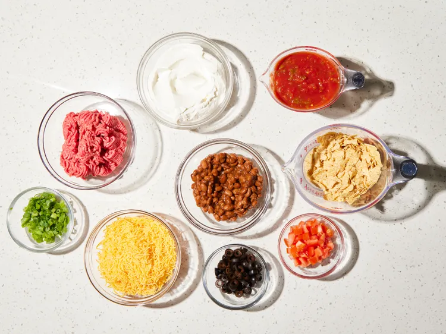
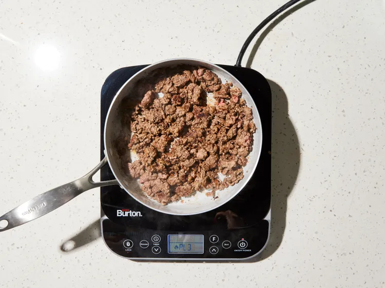
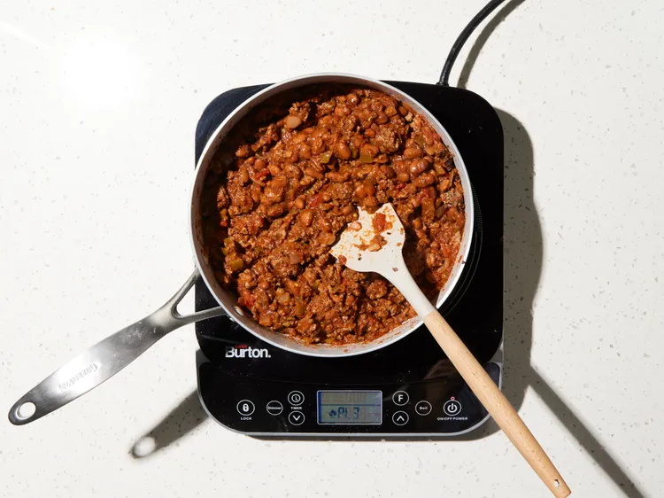
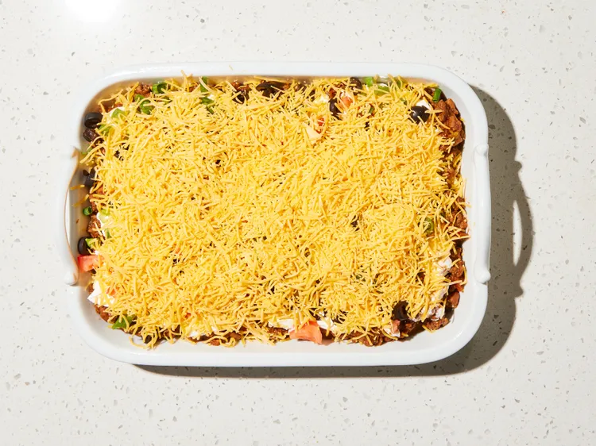
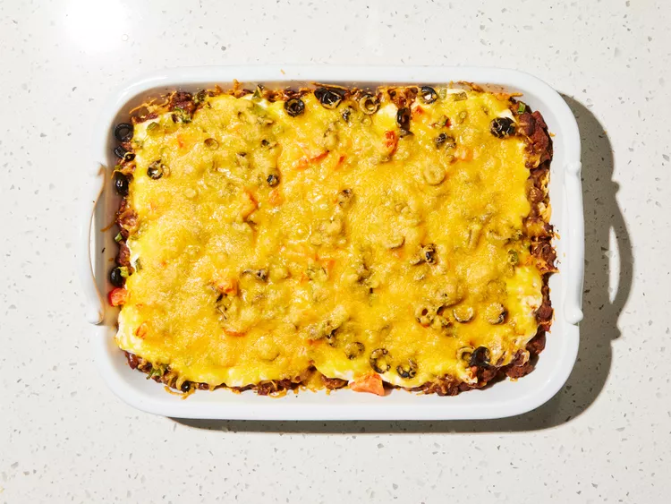
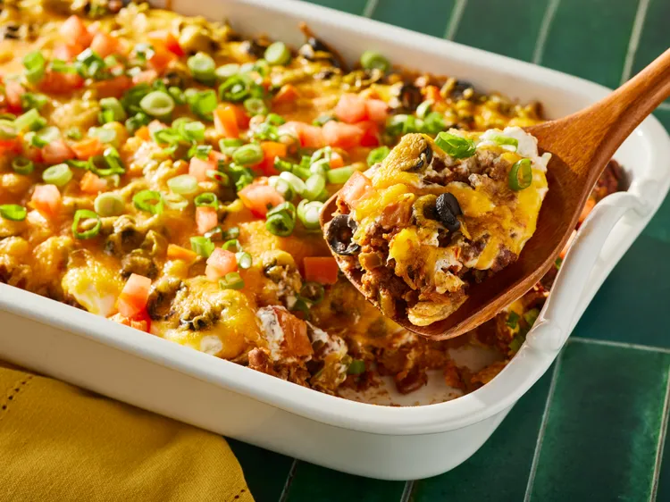

The taco casserole is a "casserole" style oven-baked dish that deconstructs traditional tacos into easy-to-serve layers.
Gather all ingredients.

Preheat the oven to 350 degrees F (175 degrees C).
Spray a 9x13-baking dish with cooking spray.
Heat a large skillet over medium-high heat.
Cook and stir ground beef in the hot skillet until browned and crumbly, 8 to 10 minutes.

Stir in salsa, reduce heat, and simmer until liquid is absorbed, about 20 minutes.
Stir in beans; cook until heated through.

Spread crushed tortilla chips over the bottom of the baking dish; spoon beef
mixture on top. Spread sour cream over beef, then sprinkle olives, green onions,
and tomatoes on top. Cover with Cheddar cheese.

Bake in the preheated oven until hot and bubbly, about 30 minutes.

Serve and enjoy!
